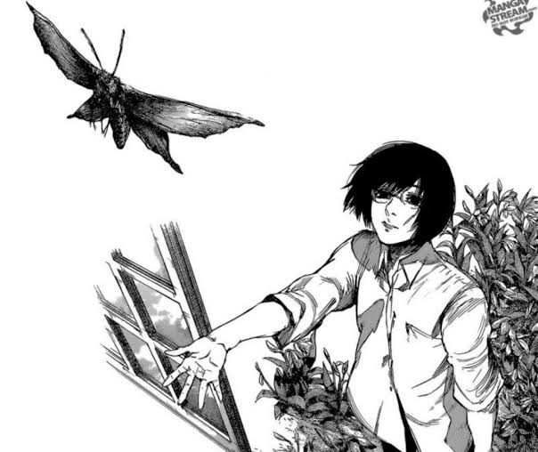

Curious, analytical and quite self-taught person, who usually learns by trying things on his or her own and seeking to understand how systems work, whether technological, mathematical or practical life situations. I tend to solve problems logically, researching and comparing options before deciding, and although I have varied interests, my focus is usually on improving skills, finding useful solutions and optimizing tools. I also show a certain discipline to learn and a positive attitude towards mistakes, using them more as part of the process than as a reason to give up.